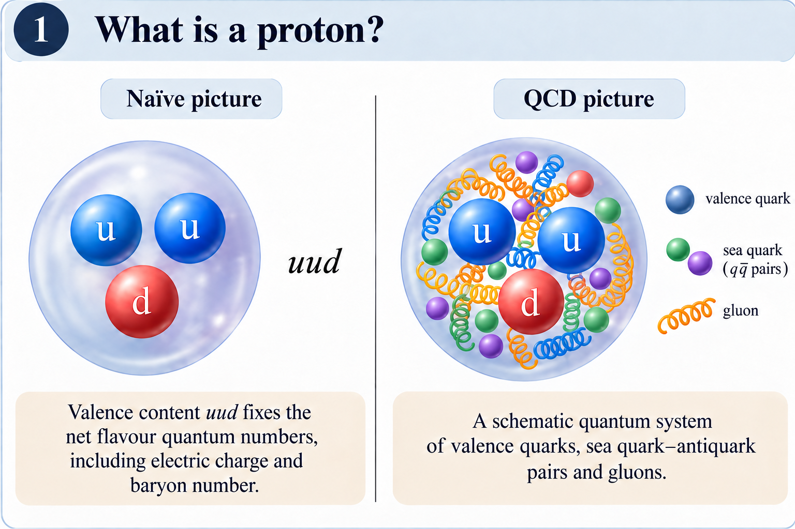

Strong interactions · Theory and experiment
Research &
perspectives.
From the questions students ask to the amplitudes I study.
My research concerns high-energy hadronic elastic scattering: how to describe its complex amplitude, confront it with data, and understand its evolution with energy. This series starts with the physical picture and gradually introduces the mathematical framework.
The main text is written for physics students and curious readers. Optional technical notes provide definitions and qualifications for readers who want to go further.
Start here · Article 01
What happens when two protons collide?
Why two intact protons can tell us about the strong interaction, and how their deflection leads to a question about energy evolution.
Read the article →
A proposed five-part sequence
From a collision to an evolution equation
- Available
What happens when two protons collide?
Proton structure, elastic scattering, observables and transverse geometry.
- Planned
From population growth to complex amplitudes
The logistic equation, its fixed points, and the limits of the analogy with a quantum amplitude.
- Planned
From Reggeon field theory to energy evolution
The effective description, the semiclassical approximation, and the meaning of the evolution parameters.
- Planned
Testing the evolution against scattering data
Initial profiles, differential cross sections, the dip, and what agreement with data can establish.
- Planned
Connections to small-x QCD—and open questions
What the parallels with BK and JIMWLK suggest, and what remains to be derived.
For researchers
The paper behind the series
A. K. Kohara, Complex logistic equation for universal energy evolution in hadronic elastic scattering, Physical Review D 113, 116041 (2026).
The series will explain the approach, distinguish its assumptions from its predictions, and connect it to the broader questions of nonlinear evolution and unitarity.
All publications →